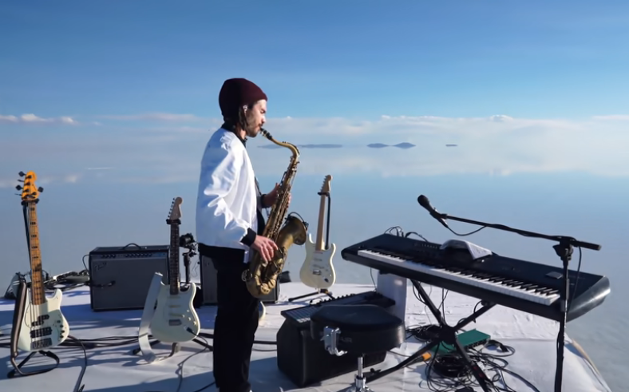

Live dans le salar de Uyuni
Timeline de Vincent Fenton :
- 1990 - Naissance de Vincent
- 2012 - EP “The Twins”
- 2013 - EP “Time For a Change”
- 2014 - EP “Take Off”
- 2017 - Album “French Kiwi Juice”
- 2019 - EP “Ylang Ylang”
- 2020 - EP “Just Piano”
- 2022 - Album “V I N C E N T”